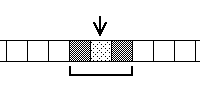
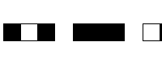
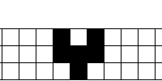

Cellular automata (CA) are arrays of squares (the cells) that can be in one of a small number of states (we will consider only two states, dead and alive, which we indicate as white and black).
Typically, the arrays of cells are taken to be linear or planar. That is, the universe is either a line of cells or a checkerboard of cells.
An initial configuration of cells (which cells are alive, which are dead) is specified by the user. This constitutes the first generation of the CA.
| What happens next is determined by the current state of the neighborhood |  |
| and by a rule |  |
| Here are some examples |  |
Return to Cellular Automata Explorations